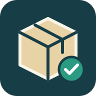

公式サイトで確認、手元で管理
送り状の番号を入力して、配送会社の公式サイトへ。
追跡番号は選んだ配送会社に送られます。配送状況は自動取得しません。
受取状態はご自身で更新する目印です。
番号が反映されない場合は公式サイトで直接ご確認ください。
追跡番号を含むバックアップです。ファイルの取り扱いにご注意ください。
既存データを上書きせず、未登録分を追加します。
発送元の案内にある配送会社を選んでください。番号形式から候補は出しますが、会社を確定できません。受取状態は手動で管理します。福山通運は公式照会画面に番号を入力してください。
iPhone・iPad：Safariの共有メニューから「ホーム画面に追加」。Android：Chromeのメニューから「アプリをインストール」。PC：ブラウザのインストールメニューを利用できます。
履歴はそのまま引き継ぎます。